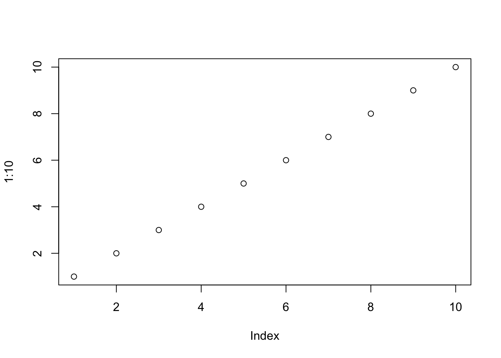
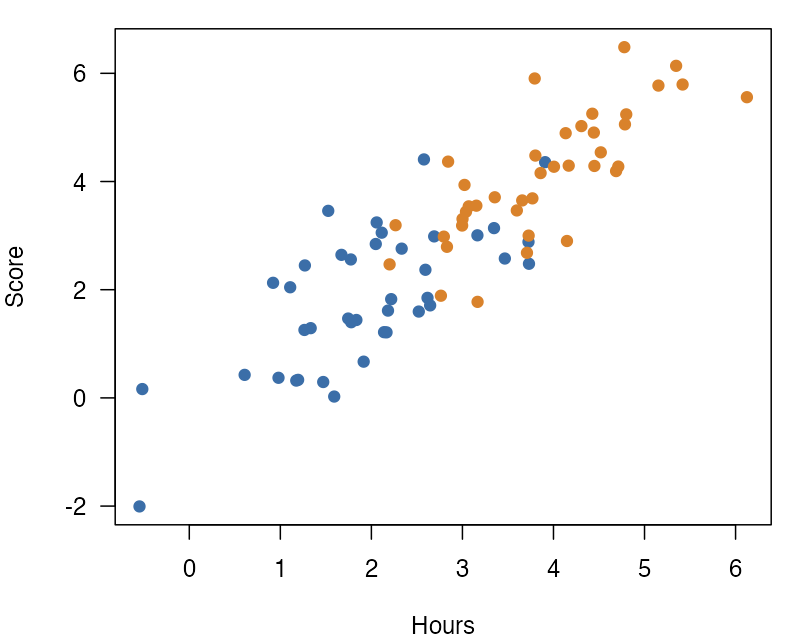

```{r}
#| label: fig-scatter
#| fig-cap: "A scatter plot."
#| classes: wrap-right
#| out-width: "30%"
plot(1:10)
```
The extension asks for Quarto 1.9.36 or later, and it is tested with Quarto 1.10.19. In the folder of your project, run:
quarto add jmgirard/wrappedThis command puts the extension under _extensions/. Then add the filter to the document’s YAML header:
filters:
- wrappedAdd the class .wrap-right or .wrap-left to a figure. The class names the side that the figure goes to. The paragraphs after the figure flow beside it. Each form below shows its source, then the result.
{#fig-ratings .wrap-right width="40%"}
The image form is the shortest. The text in the square brackets is the caption, and the #fig- id gives the figure its number, so this text can point to Figure 1.
The paragraphs after the figure flow beside it until the text passes the bottom of the figure. Then they run the full width of the column.
::: {#fig-groups .wrap-left width="35%"}

Ratings by group.
:::
The div form puts the caption in the last paragraph of the div, which keeps a long caption easy to read in the source. The class .wrap-left puts the figure on the left, and this text flows on its right.
Figure 2 has a width of 35%, so the text beside it has a little more room than beside a figure at the default 40%.
{.wrap-right width="20%" fig-alt="Lab logo"}An image with no caption wraps too. It gets no figure number. The fig-alt attribute gives it alt text.
The same rules about width and gap apply to it as to a captioned figure.
Give the cell a fig- label and a fig-cap, so that Quarto makes a figure. Put the class in #| classes:, and set the width with #| out-width::
```{r}
#| label: fig-scatter
#| fig-cap: "A scatter plot."
#| classes: wrap-right
#| out-width: "30%"
plot(1:10)
```
The plot from the cell above floats to the right, and this paragraph flows beside it. The cell’s code stays above the figure, at the full width of the column.
Figure 3 is 30% of the text column wide, as #| out-width: asks.
The examples show each of these forms rendered in HTML, in PDF through LaTeX, in PDF through Typst, and in Word.